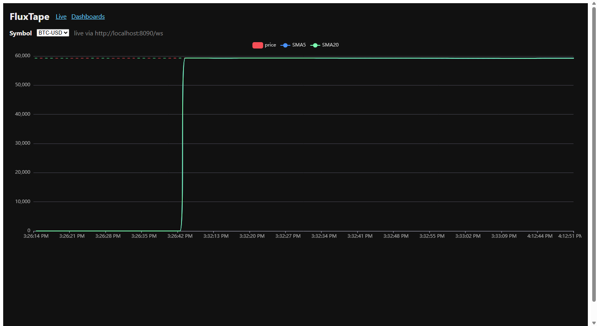
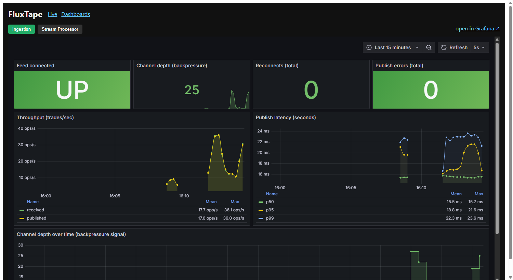
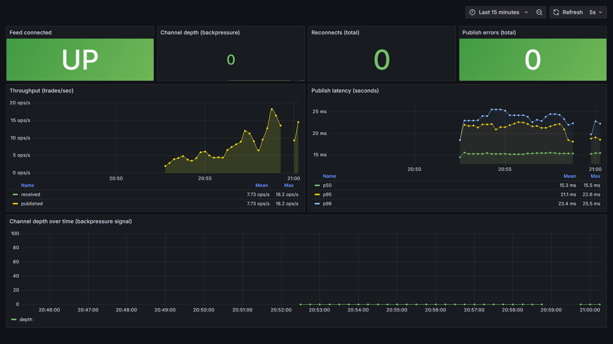
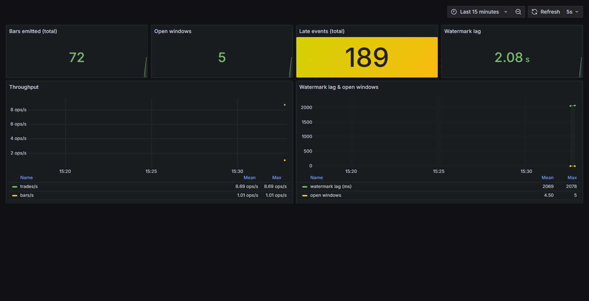

What it is
FluxTape ingests a live firehose of crypto trades from Coinbase, processes them through a streaming
pipeline (event-time windowed analytics: OHLCV bars, VWAP, moving averages), persists them across
purpose-built databases, and serves both a historical REST API and a live WebSocket feed to a
React trading dashboard — with the whole system instrumented end-to-end. It runs entirely on free
infrastructure, locally via docker-compose and on a free cloud VM.
The engineering priorities mirror what large-scale systems teams care about: correct streaming semantics under out-of-order events, backpressure, idempotency, partitioning, caching, and observability — not a CRUD app with buzzwords.
Architecture
flowchart LR EX["Coinbase WebSocket
(live trades)"] --> ING["Ingestion
[Rust] backpressure, reconnect"] ING --> K["Redpanda
(Kafka API) topic: trades
partitioned by symbol"] K --> SP["Stream Processor
[Go] tumbling windows + watermarks
OHLCV / VWAP / SMA"] SP --> B["topic: bars_1s"] B --> BS["bar-sink [Go]"] --> TS[("TimescaleDB
hot bars (hypertable)")] K --> TSK["trade-sink [Go]"] --> PG[("Postgres
source of truth")] B --> API["API Gateway [Go]
REST + WebSocket"] TS --> API API --> RD[("Redis
cache-aside")] API --> UI["React Dashboard
ECharts candlesticks"] ING -.metrics.-> PROM["Prometheus"] SP -.metrics.-> PROM API -.metrics.-> PROM PROM --> GRAF["Grafana dashboards"] UI -. embeds .-> GRAF
Ordered-per-symbol, parallel-across-symbols partitioning · at-least-once delivery made effectively-once via idempotent upserts · CQRS read path fully separate from the write pipeline.
Live demo
Live candlesticks with SMA overlays, updating in real time over a WebSocket. Static captures below; an animated capture of the live feed is added when the hosted demo is online.




Delivered in phases
| Phase | Deliverable | Key concepts |
|---|---|---|
| 0 | Local infra (docker-compose) | Environment parity |
| 1 | Ingestion (Rust) → Redpanda | WebSockets, async/tokio, backpressure, Kafka producer, reconnect + jitter |
| 2 | Stream processor (Go) | Consumer groups, event-time windows, watermarks, VWAP/SMA |
| 3 | Storage sinks | Polyglot persistence, idempotent upserts, hypertables |
| 4 | API gateway + React dashboard | CQRS, cache-aside, WebSocket fanout, CDN embed |
| 4b | Deploy (single free VM) | Multi-stage Docker, 12-factor config |
| 5+ | CDC · observability · load/chaos | WAL replication, OTel, SLOs (planned) |
Distributed-systems concepts demonstrated
- Partitioning — key by symbol: ordered per symbol, parallel across; hot-key mitigation.
- Backpressure — bounded channel + Kafka queue; overload becomes a signal, not an OOM.
- Event-time windowing & watermarks — correct aggregates under out-of-order/late events.
- Idempotency — upserts on natural keys turn at-least-once into effectively-once.
- Polyglot persistence — Timescale (hot), Postgres (truth), Redis (cache/fanout).
- CQRS — read path (REST + WS) fully separate from the write pipeline.
- Observability — Prometheus metrics, Grafana dashboards, consumer-lag as the health signal.
- Resilience — reconnect with exponential backoff + full jitter; graceful shutdown.